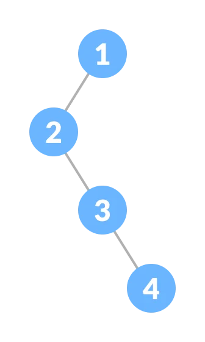

Data Structure and Algorithm

chapter 1
What is Data Structures and Algorithms?
Data Structures are structures programmed to store ordered data so that various operations can be performed on it easily. It represents the knowledge of data to be organized in memory. It should be designed and implemented in such a way that it reduces the complexity and increases the efficiency.
Characteristics of a Data Structure
Correctness − Data structure implementation should implement its interface correctly.
Time Complexity − Running time or the execution time of operations of data structure must be as small as possible.
Space Complexity − Memory usage of a data structure operation should be as little as possible.
Need for Data Structure
As applications are getting complex and data rich, there are three common problems that applications face now-a-days
1.Data Search
Consider an inventory of 1 million(106) items of a store. If the application is to search an item, it has to search an item in 1 million(106) items every time slowing down the search. As data grows, search will become slower
2.Processor speed
speed although being very high, falls limited if the data grows to billion records.
3.Multiple requests
As thousands of users can search data simultaneously on a web server, even the fast server fails while searching the data. To solve the above-mentioned problems, data structures come to rescue. Data can be organized in a data structure in such a way that all items may not be required to be searched, and the required data can be searched almost instantly.
Chapter 2
Arrays, Iteration, Invariants
Data is ultimately stored in computers as patterns of bits, though these days most programming languages deal with higher level objects, such as characters, integers, and floating point numbers. Generally, we need to build algorithms that manipulate collections of such objects, so we need procedures for storing and sequentially processing them.
Arrays
Linear Data Structure
Elements are stored in contiguous memory locations
Can access elements randomly using index
Stores homogeneous elements i.e, similar elements
Syntax:
Array declaration
datatype varname []=new datatype[size];
datatype[] varname=new datatype[size];
Can also do declaration and initialization at once
Datatype varname [] = {ele1, ele2, ele3, ele4};

Loops and Iteration
The standard approach in most programming languages for repeating a process a certain number of times, such as moving sequentially through an array to perform the same operations on each item, involves a loop. In pseudocode, this would typically take the general form For i = 1,...,N, do something and in programming languages like C and Java this would be written as the for-loop for( i = 0 ; i N ; i++ ) { // do something } in which a counter i keep tracks of doing “the something” N times. For example, we could compute the sum of all 20 items in an array a using for( i=0 , sum=0 ; i < 20 ; i++ ) { sum +=a [i]; } We say that there is iteration over the index i. The general for-loop structure is for( INITIALIZATION ; CONDITION ; UPDATE ) { REPEATED PROCESS } in which any of the four parts are optional. One way to write this out explicitly is INITIALIZATION if ( not CONDITION ) go to LOOP FINISHED LOOP START REPEATED PROCESS UPDATE if ( CONDITION ) go to LOOP START LOOP FINISHED In these notes, we will regularly make use of this basic loop structure when operating on data stored in arrays, but it is important to remember that different programming languages use different syntax, and there are numerous variations that check the condition to terminate the repetition at different points.
Invariants
An invariant, as the name suggests, is a condition that does not change during execution of a given program or algorithm. It may be a simple inequality, such as “i 20”, or something more abstract, such as “the items in the array are
sorted”. Invariants are important for data structures and algorithms because they enable correctness proofs and verification. In particular, a loop-invariant is a condition that is true at the beginning and end of every iteration
of the given loop.
Consider the standard simple example of a procedure that finds the minimum of n numbers stored in an array
a: 10 minimum(int n, float a[n]) { float min=a [0]; // min equals the minimum item in a[0],...,a[0] for(int i=1
; i !=n ; i++) { // min equals the minimum item in a[0],...,a[i-1] if (a[i] min) min=a [i]; }
// min equals the minimum item in a[0],...,a[i-1], and i==n return min; } At the beginning of each iteration, and end of any iterations
before, the invariant “min equals the minimum item in a[0], ..., a[i − 1]” is true – it starts off true, and the repeated process and update clearly maintain its truth. Hence, when the loop terminates with “i==n ”, we know that
“min equals the minimum item in a[0], ..., a[n − 1]” and hence we can be sure that min can be returned as the required minimum value.
This is a kind of proof by induction:
the invariant is true at the start of the loop,
and is preserved by each iteration of the loop, therefore it must be true at the end of the loop. As we noted earlier, formal proofs of correctness are beyond the scope of these notes, but identifying suitable loop invariants and
their implications for algorithm correctness as we go along will certainly be a useful exercise. We will also see how invariants (sometimes called inductive assertions) can be used to formulate similar correctness proofs concerning
properties of data structures that are defined inductively
Chapter 3
Lists, Recursion, Stacks, Queues
We have seen how arrays are a convenient way to store collections of items, and how loops and iteration allow us to sequentially process those items. However, arrays are not always the most efficient way to store collections of items. In this section, we shall see that lists may be a better way to store collections of items, and how recursion may be used to process them. As we explore the details of storing collections as lists, the advantages and disadvantages of doing so for different situations will become apparent
Linked Lists
A list can involve virtually anything, for example, a list of integers [3, 2, 4, 2, 5], a shopping list [apples, butter, bread, cheese], or a list of web pages each containing a picture and a link to the next web page. When considering lists, we can speak about-them on different levels - on a very abstract level (on which we can define what we mean by a list), on a level on which we can depict lists and communicate as humans about them, on a level on which computers can communicate, or on a machine level in which they can be implemented.

Graphical Representation
Non-empty lists can be represented by two-cells, in each of which the first cell contains a pointer to a list element and the second cell contains a pointer to either the empty list or another two-cell. We can depict a pointer to the
empty list by a diagonal bar or cross through the cell.
For instance, the list [3, 1, 4, 2, 5] can be represented as:
❄ ✲ 3 ❄ ✲ 1 ❄ ✲ 4 ❄ ✲ 2 ❄ 5 Abstract Data Type “List” On an abstract level , a list can be constructed
by the two constructors: • EmptyList, which gives you the empty list, and • MakeList(element, list), which puts an element at the top of an existing list.
Using those, our last example list can be constructed as MakeList(3,
MakeList(1, MakeList(4, MakeList(2, MakeList(5, EmptyList))))). and it is clearly possible to construct any list in this way.
This inductive approach to data structure creation is very powerful, and we shall use it many times
throughout these notes. It starts with the “base case”, the EmptyList, and then builds up increasingly complex lists by repeatedly applying the “induction step”, the MakeList(element, list) operator.
It is obviously also important
to be able to get back the elements of a list, and we no longer have an item index to use like we have with an array.

implementation of List
There are many different implementations possible for lists, and which one is best will depend on the primitives offered by the programming language being used. The programming language Lisp and its derivates, for instance, take lists
as the most important primitive data structure.
In some other languages, it is more natural to implement 14 lists as arrays. However, that can be problematic because lists are conceptually not limited in size, which means array
based implementation with fixed-sized arrays can only approximate the general concept.
For many applications, this is not a problem because a maximal number of list members can be determined a priori (e.g., the maximum number
of students taking one particular module is limited by the total number of students in the University). More general purpose implementations follow a pointer based approach, which is close to the diagrammatic representation given
above. We will not go into the details of all the possible implementations of lists here, but such information is readily available in the standard textbooks.
Recursion
We previously saw how iteration based on for-loops was a natural way to process collections of items stored in arrays. When items are stored as linked-lists, there is no index for each item, and recursion provides the natural way to
process them. The idea is to formulate procedures which involve at least one step that invokes (or calls) the procedure itself. We will now look at how to implement two important derived procedures on lists, last and append, which
illustrate how recursion works.
To find the last element of a list l we can simply keep removing the first remaining item till there are no more left. This algorithm can be written in pseudocode as: last(l) { if ( isEmpty(l)
) error(‘Error: empty list in last’) elseif ( isEmpty(rest(l)) ) return first(l) else return last(rest(l)) }
The running time of this depends on the length of the list, and is proportional to that length, since last is called
as often as there are elements in the list. We say that the procedure has linear time complexity, that is, if the length of the list is increased by some factor, the execution time is increased by the same factor.
Compared
to the constant time complexity which access to the last element of an array has, this is quite bad. It does not mean, however, that lists are inferior to arrays in general, it just means that lists are not the ideal data structure
when a program has to access the last element of a long list very often. Another useful procedure allows us to append one list l2 to another list l1.
Again, this needs to be done one item at a time, and that can be accomplished
by repeatedly taking the first remaining item of l1 and adding it to the front of the remainder appended to l2: append(l1,l2) { if ( isEmpty(l1) ) return l2 else return MakeList(first(l1),append(rest(l1),l2)) } The time complexity
of this procedure is proportional to the length of the first list, l1, since we have to call append as often as there are elements in l1. 15 3.3 Stacks Stacks are, on an abstract level, equivalent to linked lists.
They are
the ideal data structure to model a First-In-Last-Out (FILO), or Last-In-First-Out (LIFO), strategy in search. Graphical Representation Their relation to linked lists means that their graphical representation can be the same, but
one has to be careful about the order of the items.
For instance, the stack created by inserting the numbers [3, 1, 4, 2, 5] in that order. Abstract Data Type: “Stack” Despite their relation to linked lists, their different
use means the primitive operators for stacks are usually given different names. The two constructors are: • EmptyStack, the empty stack, and • push(element, stack), which takes an element and pushes it on top of an existing stack,
and the two selectors are: • top(stack), which gives back the top most element of a stack, and • pop(stack), which gives back the stack without the top most element. The selectors will work only for non-empty stacks, hence we need
a condition which tells whether a stack is empty: • isEmpty(stack) We have equivalent automatically-true relationships to those we had for the lists: • isEmpty(EmptyStack) • not isEmpty(push(x, s)) (for any x and s) • top(push(x,
s)) = x • pop(push(x, s)) = s In summary, we have the direct correspondences: constructors selectors condition List EmptyList MakeList first rest isEmpty Stack EmptyStack push top pop isEmpty So, stacks and linked lists are the
same thing, apart from the different names that are used for their constructors and selecto

Implementation of Stacks
There are two different ways we can think about implementing stacks. So far we have implied a functional approach. That is, push does not change the original stack, but creates a new stack out of the original stack and a new element. That is, there are at least two stacks around, the original one and the newly created one. This functional view is quite convenient. If we apply top to a particular stack, we will always get the same element. However, from a practical point of view, we may not want to create lots of new stacks in a program, because of the obvious memory management implications. Instead it might be better to think of a single stack which is destructively changed, so that after applying push the original stack no longer exits, but has been changed into a new stack with an extra element. This is conceptually more difficult, since now applying top to a given stack may give different answers, depending on how the state of the system has changed. However, as long as we keep this difference in mind, ignoring such implementational details should not cause any problems.

Queues
A queue is a data structure used to model a First-In-First-Out (FIFO) strategy. Conceptually, we add to the end of a queue and take away elements from its front.

Working of Queue
Queue operations work as follows:
two pointers FRONT and REAR.
FRONT track the first element of the queue.
REAR track the last element of the queue.
initially, set value of FRONT and REAR to -1
Types of Queues
A queue is a useful data structure in programming. It is similar to the ticket queue outside a cinema hall, where the first person entering the queue is the first person who gets the ticket.
There are four different types of queues:
1.Simple Queue
2.Circular Queue
3.Priority Queue
4.Double Ended Queue
Graphical Representation
A queue can be graphically represented in a similar way to a list or stack, but with an additional two-cell in which the first element points to the front of the list of all the elements in the queue, and the second element points to the last element of the list. For instance, if we insert the elements [3, 1, 4, 2] into an initially empty queue. This arrangement means that taking the first element of the queue, or adding an element to the back of the queue, can both be done efficiently. In particular, they can both be done with constant effort, i.e. independently of the queue length. Abstract Data Type “Queue” On an abstract level, a queue can be constructed by the two constructors: • EmptyQueue, the empty queue, and • push(element, queue), which takes an element and a queue and returns a queue in which the element is added to the original queue at the end. For instance, by applying push(5, q) where q is the queue.The two selectors are the same as for stacks: • top(queue), which gives the top element of a queue, that is, 3 in the example, and • pop(queue), which gives the queue without the top element. And, as with stacks, the selectors only work for non-empty queues, so we again need a condition which returns whether a queue is empty: • isEmpty(queue) In later chapters we shall see practical examples of how queues and stacks operate with different effect.
Doubly Linked List
s A doubly linked list might be useful when working with something like a list of web pages, which has each page containing a picture, a link to the previous page, and a link to the next page. For a simple list of numbers, a linked list and a doubly linked list may look the same, e.g., [3, 1, 4, 2, 5]. However, the doubly linked list also has an easy way to get the previous element, as well as to the next element

Graphical Representation
n Non-empty doubly linked lists can be represented by three-cells, where the first cell contains a pointer to another three-cell or to the empty list, the second cell contains a pointer to the list element and the third cell contains a pointer to another three-cell or the empty list. Again, we depict the empty list by a diagonal bar or cross through the appropriate cell.
Abstract Data Type “Doubly Linked list
d List” On an abstract level , a doubly linked list can be constructed by the three constructors: • EmptyList, the empty list • MakeListLeft(element, list), which takes an element and a doubly linked list and returns a new doubly linked list with the element added to the left of the original doubly linked list. • MakeListRight(element, list), which takes an element and a doubly linked list and returns a new doubly linked list with the element added to the right of the original doubly linked list. It is clear that it may possible to construct a given doubly linked list in more that one way. For example, the doubly linked list represented above can be constructed by either of: MakeListLeft(3, MakeListLeft(1, MakeListLeft(4, MakeListLeft(2, MakeListLeft(5, EmptyList))))) MakeListLeft(3, MakeListLeft(1, MakeListRight(5, MakeListRight(2, MakeListLeft(4, EmptyList))))) In the case of doubly linked lists, we have four selectors: • firstLeft(list), • restLeft(list), • firstRight(list), and • restRight(list). Then, since the selectors only work for non-empty lists, we also need a condition which returns whether a list is empty: • isEmpty(list) This leads to automatically-true relationships such as: • isEmpty(EmptyList) • not isEmpty(MakeListLeft(x, l)) (for any x and l) • not isEmpty(MakeListRight(x, l)) (for any x and l) • firstLeft(MakeListLeft(x, l)) = x • restLeft(MakeListLeft(x, l)) = l • firstRight(MakeListRight(x, l)) = x • restRight(MakeListRight(x, l)) = l
Circular Doubly Linked List
As a simple extension of the standard doubly linked list, one can define a circular doubly linked list in which the left-most element points to the right-most element, and vice versa. This is useful when we might need to move efficiently through a whole list of items, but might not be starting from one of two particular end points.

Advantage of Abstract Data Types
It is clear that the implementation of the abstract linked-list data type has the disadvantage that certain useful procedures may not be directly accessible. For instance, the standard abstract data type of a list does not offer an efficient procedure last(l) to give the last element in the list, whereas it would be trivial to find the last element of an array of a known number of elements. One could modify the linked-list data type by maintaining a pointer to the last item, as we did for the queue data type, but we still wouldn’t have an easy way to access intermediate items. While last(l) and getItem(i, l) procedures can easily be implemented using the primitive constructors, selectors, and conditions, they are likely to be less efficient than making use of certain aspects of the underlying implementation. That disadvantage leads to an obvious question: Why should we want to use abstract data types when they often lead to less efficient algorithms? Aho, Hopcroft and Ullman (1983) provide a clear answer in their book: “At first, it may seem tedious writing procedures to govern all accesses to the underlying structures. However, if we discipline ourselves to writing programs in terms of the operations for manipulating abstract data types rather than making use of particular implementations details, then we can modify programs more readily by reimplementing the operations rather than searching all programs for places where we have made accesses to the underlying data structures. This flexibility can be particularly important in large software efforts, and the reader should not judge the concept by the necessarily tiny examples found in this book.” This advantage will become clearer when we study more complex abstract data types and algorithms in later chapters
Chapter 4
Searching
An important and recurring problem in computing is that of locating information. More succinctly, this problem is known as searching. This is a good topic to use for a preliminary exploration of the various issues involved in algorithm design.
Requirements for searching
Clearly, the information to be searched has to first be represented (or encoded) somehow. This is where data structures come in. Of course, in a computer, everything is ultimately represented as sequences of binary digits (bits), but
this is too low level for most purposes. We need to develop and study useful data structures that are closer to the way humans think, or at least more structured than mere sequences of bits. This is because it is humans who have
to develop and maintain the software systems – computers merely run them.
After we have chosen a suitable representation, the represented information has to be processed somehow. This is what leads to the need for algorithms.
In this case, the process of interest is that of searching. In order to simplify matters, let us assume that we want to search a collection of integer numbers (though we could equally well deal with strings of characters, or any
other data type of interest). To begin with, let us consider:
1. The most obvious and simple representation.
2. Two potential algorithms for processing with that representation. As we have already noted, arrays are one
of the simplest possible ways of representing collections of numbers (or strings, or whatever), so we shall use that to store the information to be searched. Later we shall look at more complex data structures that may make storing
and searching more efficient. Suppose, for example, that the set of integers we wish to search is {1,4,17,3,90,79,4,6,81}. We can write them in an array a as a = [1, 4, 17, 3, 90, 79, 4, 6, 81] If we ask where 17 is in this array,
the answer is 2, the index of that element. If we ask where 91 is, the answer is nowhere. It is useful to be able to represent nowhere by a number that is not used as a possible index. Since we start our index counting from 0,
any negative number would do. We shall follow the convention of using the number −1 to represent nowhere. Other (perhaps better) conventions are possible, but we will stick to this here.
Specification of the search problem
We can now formulate a specification of our search problem using that data structure: Given an array a and integer x, find an integer i such that 1. if there is no j such that a[j] is x, then i is −1, 2. otherwise, i is any j for which a[j] is x. The first clause says that if x does not occur in the array a then i should be −1, and the second says that if it does occur then i should be a position where it occurs. If there is more than one position where x occurs, then this specification allows you to return any of them – for example, this would be the case if a were [17, 13, 17] and x were 17. Thus, the specification is ambiguous. Hence different algorithms with different behaviours can satisfy the same specification – for example, one algorithm may return the smallest position at which x occurs, and another may return the largest. There is nothing wrong with ambiguous specifications. In fact, in practice, they occur quite often.
A simple algorithm: Linear Search
We can conveniently express the simplest possible algorithm in a form of pseudocode which reads like English, but resembles a computer program without some of the precision or detail that a computer usually requires: // This assumes
we are given an array a of size n and a key x. For i = 0,1,...,n-1, if a[i] is equal to x, then we have a suitable i and can terminate returning i. If we reach this point, then x is not in a and hence we must terminate returning
-1. Some aspects, such as the ellipsis “. . . ”, are potentially ambiguous, but we, as human beings, know exactly what is meant, so we do not need to worry about them. In a programming language such as C or Java, one would write
something that is more precise like:
for ( i = 0 ; i n ; i++ ) { if ( a[i]==x ) return i; } return -1;
In the case of Java, this would be within a method of a class, and more details are needed, such as the parameter a
for the method and a declaration of the auxiliary variable i. In the case of C , this would be within a function, and similar missing details are needed. In either, there would need to be additional code to output the result in
a suitable format. In this case, it is easy to see that the algorithm satisfies the specification (assuming n is the correct size of the array) – we just have to observe that, because we start counting from zero, the last position
of the array is its size minus one. If we forget this, and let i run from 0 to n instead, we get an incorrect algorithm. The practical effect of this mistake is that the execution of this algorithm gives rise to an error when the
item to be located in the array is actually not there, because a non-existing location is attempted to be accessed. Depending on the particular language, operating system and machine you are using, the actual effect of this error
will be different. For example, in C running under Unix, you may get execution aborted followed by the message “segmentation fault”, or you may be given the wrong answer as the output. In Java, you will always get an error message.

A more efficient algorithm: Binary Search
One always needs to consider whether it is possible to improve upon the performance of a particular algorithm, such as the one we have just created. In the worst case, searching an array of size n takes n steps. On average, it will take n/2 steps. For large collections of data, such as all web-pages on the internet, this will be unacceptable in practice. Thus, we should try to organize the collection in such a way that a more efficient algorithm is possible. As we shall see later, there are many possibilities, and the more we demand in terms of efficiency, the more complicated the data structures representing the collections tend to become. Here we shall consider one of the simplest – we still represent the collections by arrays, but now we enumerate the elements in ascending order. The problem of obtaining an ordered list from any given list is known as sorting and will be studied in detail in a later chapter.

Chapter 5
Efficiency and Complexity
We have already noted that, when developing algorithms, it is important to consider how efficient they are, so we can make informed choices about which are best to use in particular circumstances. So, before moving on to study increasingly complex data structures and algorithms, we first look in more detail at how to measure and describe their efficiency
Time versus space complexity
When creating software for serious applications, there is usually a need to judge how quickly an algorithm or program can complete the given tasks. For example, if you are programming a flight booking system, it will not be considered acceptable if the travel agent and customer have to wait for half an hour for a transaction to complete. It certainly has to be ensured that the waiting time is reasonable for the size of the problem, and normally faster execution is better. We talk about the time complexity of the algorithm as an indicator of how the execution time depends on the size of the data structure. Another important efficiency consideration is how much memory a given program will require for a particular task, though with modern computers this tends to be less of an issue than it used to be. Here we talk about the space complexity as how the memory requirement depends on the size of the data structure. For a given task, there are often algorithms which trade time for space, and vice versa. For example, we will see that, as a data storage device, hash tables have a very good time complexity at the expense of using more memory than is needed by other algorithms. It is usually up to the algorithm/program designer to decide how best to balance the trade-off for the application they are designing.
Worst versus average complexity
Another thing that has to be decided when making efficiency considerations is whether it is the average case performance of an algorithm/program that is important, or whether it is more important to guarantee that even in the worst case the performance obeys certain rules. For many applications, the average case is more important, because saving time overall is usually more important than guaranteeing good behaviour in the worst case. However, for time-critical problems, such as keeping track of aeroplanes in certain sectors of air space, it may be totally unacceptable for the software to take too long if the worst case arises. 25 Again, algorithms/programs often trade-off efficiency of the average case against efficiency of the worst case. For example, the most efficient algorithm on average might have a particularly bad worst case efficiency. We will see particular examples of this when we consider efficient algorithms for sorting and searching.
Concrete measures for performance
These days, we are mostly interested in time complexity. For this, we first have to decide how to measure it. Something one might try to do is to just implement the algorithm and run it, and see how long it takes to run, but that approach has a number of problems. For one, if it is a big application and there are several potential algorithms, they would all have to be programmed first before they can be compared. So a considerable amount of time would be wasted on writing programs which will not get used in the final product. Also, the machine on which the program is run, or even the compiler used, might influence the running time. You would also have to make sure that the data with which you tested your program is typical for the application it is created for.
Big-O notation for complexity class
Very often, we are not interested in the actual function C(n) that describes the time complexity of an algorithm in terms of the problem size n, but just its complexity class. This ignores any constant overheads and small constant factors, and just tells us about the principal growth 26 of the complexity function with problem size, and hence something about the performance of the algorithm on large numbers of items. If an algorithm is such that we may consider all steps equally costly, then usually the complexity class of the algorithm is simply determined by the number of loops and how often the content of those loops are being executed. The reason for this is that adding a constant number of instructions which does not change with the size of the problem has no significant effect on the overall complexity for large problems. There is a standard notation, called the Big-O notation, for expressing the fact that constant factors and other insignificant details are being ignored.
Chapter 6
Tree
In computer science, a tree is a very general and powerful data structure that resembles a real tree. It consists of an ordered set of linked nodes in a connected graph, in which each node has at most one parent node, and zero or more children nodes with a specific order.
General specification of trees
Generally, we can specify a tree as consisting of nodes (also called vertices or points) and edges (also called lines, or, in order to stress the directedness, arcs) with a tree-like structure. It is usually easiest to represent trees pictorially, so we shall frequently do that.
Why Tree Data Structure?
Other data structures such as arrays, linked list, stack, and queue are linear data structures that store data sequentially. In order to perform any operation in a linear data structure, the time complexity increases with the increase
in the data size. But, it is not acceptable in today's computational world.
Different tree data structures allow quicker and easier access to the data as it is a non-linear data structure.
Tree Terminologies
Node
A node is an entity that contains a key or value and pointers to its child nodes.
The last nodes of each path are called leaf nodes or external nodes that do not contain a link/pointer to child nodes.
The node having at least a
child node is called an internal node.
Edge
It is the link between any two nodes.

Root
It is the topmost node of a tree.
Height of a Node
The height of a node is the number of edges from the node to the deepest leaf (ie. the longest path from the node to a leaf node).
Depth of a Node
The depth of a node is the number of edges from the root to the node.
Height of a Tree
The height of a Tree is the height of the root node or the depth of the deepest node.

Degree of a Node
The degree of a node is the total number of branches of that node.
forest
A collection of disjoint trees is called a forest.

Quad-trees
A quadtree is a particular type of tree in which each leaf-node is labelled by a value and each non-leaf node has exactly four children. It is used most often to partition a two dimensional space (e.g., a pixelated image) by recursively dividing it into four quadrants. Formally, a quadtree can be defined to be either a single node with a number or value (e.g., in the range 0 to 255), or a node without a value but with four quadtree children: lu, ll, ru, and rl. It can thus be defined “inductively” by the following rules: Definition. A quad tree is either (Rule 1) a root node with a value, or (Rule 2) a root node without a value and four quad tree children: lu, ll, ru, and rl. in which Rule 1 is the “base case” and Rule 2 is the “induction step”. We say that a quadtree is primitive if it consists of a single node/number, and that can be tested by the corresponding condition: • isValue(qt), which returns true if quad-tree qt is a single node. To build a quad-tree we have two constructors: • baseQT(value), which returns a single node quad-tree with label value. • makeQT(luqt, ruqt, llqt, rlqt), which builds a quad-tree from four constituent quadtrees luqt, llqt, ruqt, rlqt. 32 Then to extract components from a quad-tree we have four selectors: • lu(qt), which returns the left-upper quad-tree. • ru(qt), which returns the right-upper quad-tree. • ll(qt), which returns the left-lower quad-tree. • rl(qt), which returns the right-lower quad-tree. which can be applied whenever isValue(qt) is false. For cases when isValue(qt) is true, we could define an operator value(qt) that returns the value, but conventionally we simply say that qt itself is the required value. Quad-trees of this type are most commonly used to store grey-value pictures (with 0 representing black and 255 white).

Binary tree
A binary tree is a tree data structure in which each parent node can have at most two children. Each node of a binary tree consists of three items:
1.data item
2.address of left child
3.address of right child

Types of Binary Tree
1. Full Binary Tree
A full Binary tree is a special type of binary tree in which every parent node/internal node has either two or no children.

2. Perfect Binary Tree
A perfect binary tree is a type of binary tree in which every internal node has exactly two child nodes and all the leaf nodes are at the same level.

3. Complete Binary Tree
A complete binary tree is just like a full binary tree, but with two major differences
1.Every level must be completely filled
2. All the leaf elements must lean towards the left.
3.The last leaf element might not have a right sibling i.e. a complete binary tree doesn't have to be a full binary tree.

4. Degenerate or Pathological Tree
A degenerate or pathological tree is the tree having a single child either left or right.
5. Skewed Binary Tree
A skewed binary tree is a pathological/degenerate tree in which the tree is either dominated by the left nodes or the right nodes. Thus, there are two types of skewed binary tree: left-skewed binary tree and right-skewed binary tree.

6. Balanced Binary Tree
It is a type of binary tree in which the difference between the height of the left and the right subtree for each node is either 0 or 1.

Binary Tree Representation
A node of a binary tree is represented by a structure containing a data part and two pointers to other structures of the same type.
struct node
{
int data;
struct node *left;
struct node *right; };
binary tree in java code
/ Binary Tree in Java
// Node creation
class Node {
int key;
Node left, right;
public Node(int item) {
key = item;
left = right = null;
} }
class BinaryTree {
Node root;
BinaryTree(int key) {
root = new Node(key);
}
BinaryTree() {
root = null; }
// Traverse Inorder
public void traverseInOrder(Node node) {
if (node != null) {
traverseInOrder(node.left);
System.out.print(" " + node.key);
traverseInOrder(node.right);
} }
// Traverse Postorder
public void traversePostOrder(Node node) {
if (node != null) {
traversePostOrder(node.left);
traversePostOrder(node.right);
System.out.print(" " + node.key); } } // Traverse Preorder public void traversePreOrder(Node node) { if (node != null) { System.out.print(" " + node.key); traversePreOrder(node.left); traversePreOrder(node.right); } } public static
void main(String[] args) { BinaryTree tree = new BinaryTree(); tree.root = new Node(1); tree.root.left = new Node(2); tree.root.right = new Node(3); tree.root.left.left = new Node(4); System.out.print("Pre order Traversal: "); tree.traversePreOrder(tree.root);
System.out.print("\nIn order Traversal: "); tree.traverseInOrder(tree.root); System.out.print("\nPost order Traversal: "); tree.traversePostOrder(tree.root); } }
Binary Tree Applications
For easy and quick access to data.
In router algorithms.
To implement heap data structure.
Syntax tree.
Binary Search Tree(BST)
Binary search tree is a data structure that quickly allows us to maintain a sorted list of numbers.
It is called a binary tree because each tree node has a maximum of two children.
It is called a search tree because it can be used
to search for the presence of a number in O(log(n)) time.
The properties that separate a binary search tree from a regular binary tree is
1.All nodes of left subtree are less than the root node
2.All nodes of right subtree
are more than the root node
3.Both subtrees of each node are also BSTs i.e. they have the above two properties
Primitive operations on binary trees
The primitive operators for binary trees are fairly obvious. We have two constructors which are used to build trees:
• EmptyTree, which returns an empty tree, • MakeTree(v, l, r), which builds a binary tree from a root node with label
v and two constituent binary trees l and r, a condition to test whether a tree is empty:
• isEmpty(t), which returns true if tree t is the EmptyTree, and three selectors to break a non-empty tree into its constituent parts: • root(t),
which returns the value of the root node of binary tree t,
• left(t), which returns the left sub-tree of binary tree t,
• right(t), which returns the right sub-tree of binary tree t. These operators can be used to create all
the algorithms we might need for manipulating binary trees. For convenience though, it is often a good idea to define derived operators that allow us to write simpler, more readable algorithms. For example, we can define a derived
constructor:
• Leaf(v) = MakeTree(v, EmptyTree, EmptyTree) that creates a tree consisting of a single node with label v, which is the root and the unique leaf of the tree at the same time. Then the tree in Figure 6.1 can be constructed as:
34 t = MakeTree(8, MakeTree(3,Leaf(1),MakeTree(6,EmptyTree,Leaf(7))), MakeTree(11,MakeTree(9,EmptyTree,Leaf(10)),MakeTree(14,Leaf(12),Leaf(15)))) which is much simpler than the construction using the primitive operators.
AVL tree
What if the input to binary search tree comes in a sorted (ascending or descending) manner? It will then look like this − Unbalanced BST It is observed that BST's worst-case performance is closest to linear search algorithms, that is Ο(n).
In real-time data, we cannot predict data pattern and their frequencies. So, a need arises to balance out the existing BST. Named after their inventor Adelson, Velski & Landis, AVL trees are height balancing binary search tree.
AVL
tree checks the height of the left and the right sub-trees and assures that the difference is not more than 1. This difference is called the Balance Factor. Here we see that the first tree is balanced and the next two trees are not
balanced − Unbalanced AVL Trees In the second tree, the left subtree of C has height 2 and the right subtree has height 0, so the difference is 2. In the third tree, the right subtree of A has height 2 and the left is missing, so it
is 0, and the difference is 2 again. AVL tree permits difference (balance factor) to be only 1. BalanceFactor = height(left-sutree) − height(right-sutree) If the difference in the height of left and right sub-trees is more than 1,
the tree is balanced using some rotation techniques. AVL Rotations To balance itself, an AVL tree may perform the following four kinds of rotations − Left rotation Right rotation Left-Right rotation Right-Left rotation The first two
rotations are single rotations and the next two rotations are double rotations. To have an unbalanced tree, we at least need a tree of height 2. With this simple tree, let's understand them one by one.
Left Rotation
If a tree becomes unbalanced, when a node is inserted into the right subtree of the right subtree, then we perform a single left rotation −
 Left Rotation In our example, node A has become unbalanced as a node is inserted in the
right subtree of A's right subtree.
Left Rotation In our example, node A has become unbalanced as a node is inserted in the
right subtree of A's right subtree.
Right Rotation
Right Rotation AVL tree may become unbalanced, if a node is inserted in the left subtree of the left subtree. The tree then needs a right rotation.

Right Rotation As depicted, the unbalanced node becomes the right child of its left child by performing a right rotation.
Left-right rotation
Left-Right Rotation Double rotations are slightly complex version of already explained versions of rotations. To understand them better, we should take note of each action performed while rotation. Let's first check how to perform Left-Right rotation.
Left-right rotation is a combination of left rotation followed by right rotation
Right-Left Rotation
The second type of double rotation is Right-Left Rotation. It is a combination of right rotation followed by left rotation.
spanning tree
A spanning tree is a subset of Graph G, which has all the vertices covered with minimum possible number of edges. Hence, a spanning tree does not have cycles and it cannot be disconnected.. By this definition, we can draw a conclusion
that every connected and undirected Graph G has at least one spanning tree. A disconnected graph does not have any spanning tree, as it cannot be spanned to all its vertices.

We found three spanning trees off one complete graph. A complete undirected graph can have maximum nn-2 number of spanning trees, where n is the number of nodes. In the above addressed example, n is 3, hence 33−2 = 3 spanning trees are possible.
General properties
A connected graph G can have more than one spanning tree. All possible spanning trees of graph G, have the same number of edges and vertices. The spanning tree does not have any cycle (loops). Removing one edge from the spanning tree will make the graph disconnected, i.e. the spanning tree is minimally connected. Adding one edge to the spanning tree will create a circuit or loop, i.e. the spanning tree is maximally acyclic.
chapter-7
Graph
A graph data structure is a collection of nodes that have data and are connected to other nodes.
Let's try to understand this through an example. On facebook, everything is a node. That includes User, Photo, Album, Event, Group,
Page, Comment, Story, Video, Link, Note...anything that has data is a node.
Every relationship is an edge from one node to another. Whether you post a photo, join a group, like a page, etc., a new edge is created for that
relationship.

All of facebook is then a collection of these nodes and edges. This is because facebook uses a graph data structure to store its data.
More precisely, a graph is a data structure (V, E) that consists of
A collection of vertices V
A collection of edges E, represented as ordered pairs of vertices (u,v)